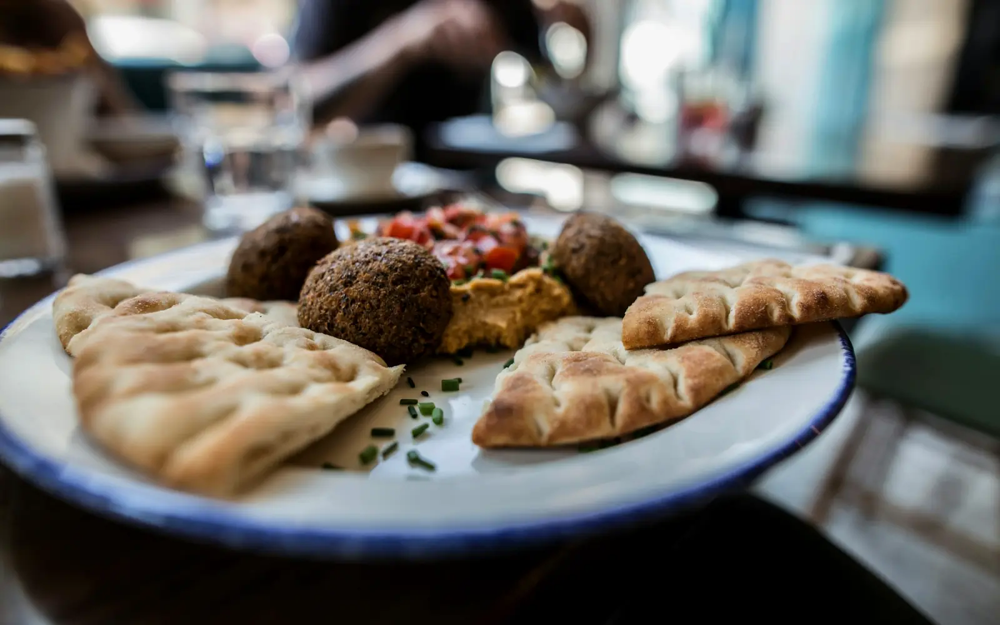

Europe · Eastern Mediterranean
Falafel with Pita and Hummus
Karare falafel, naram pita aur malaidar hummus ki thali.
Time45 min
LevelMedium
SpiceMild
Serves4
100% vegetarianVegan
Your rating
What you need
People4
How to make it
- 1
Chane raat bhar bhigo kar chaan lo aur pyaaz, lehsun, parsley, jeera aur namak ke saath dardara peeso.
- 2
Baking powder milakar 30 minute fridge mein rakho. 30 min
- 3
Chhoti tikkiyan banao aur garam tel mein sunehra talo. 8 min
- 4
Pita ko tawe par halka garam karo.
- 5
Pita, falafel, hummus, kheera aur tamatar ke saath plate sajaoo.
Photo: Wera Durakova · Unsplash License
More from Europe
 ItalyMedium
ItalyMedium
Karare base pe tamatar, mozzarella aur basil.
40 minMedium☆☆☆☆☆MildServes 4
View Recipe FranceMedium
FranceMedium
Garmiyon ki sabziyon ki rangeen French dish.
60 minMedium☆☆☆☆☆MildServes 4
VeganGluten-free
View Recipe SpainEasy
SpainEasy
Dhuandaar teekhi tamatar sauce mein karare aloo.
40 minEasy☆☆☆☆☆SpicyServes 4
VeganGluten-free
View Recipe 0:00